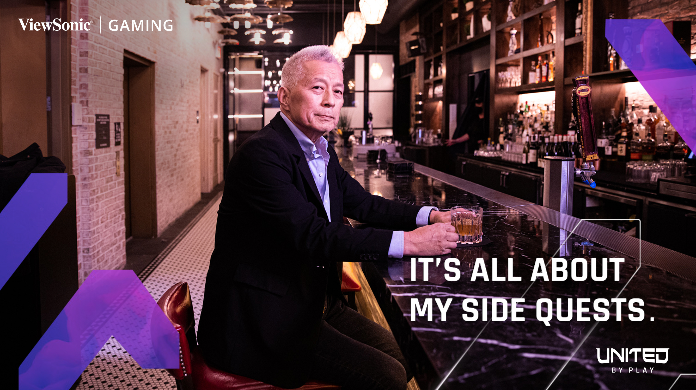

United by Play.
A global campaign that challenged gaming stereotypes and proved that no matter how you play, we are all united by play.
The Problem
Despite more than 30 years in gaming displays and the successful launch of its high-performance ELITE monitors, ViewSonic discovered a major disconnect in the gaming market: over 60% of people who play games don't actually identify as "gamers."
Traditional gaming marketing often focused on stereotypes that excluded casual players and broader audiences.
With the launch of the OMNI line, ViewSonic saw an opportunity to reposition itself under the unified banner of "ViewSonic Gaming" and create a brand platform that embraced every type of player.
The Solution
ViewSonic launched the global "United by Play" campaign built around the message that no matter how, where, or why you play, we are all united by play. The platform reframed gaming as something inclusive — a shared experience that crosses age, gender, geography, and skill level.




The Docuseries
A three-part docuseries — Beyond the Game — followed gamers whose lives challenged the traditional stereotype, taking us behind the scenes with a tech rehearsal, a custom-build forge, and an art gallery curated by the players themselves.


The Battle For Charity
A streamed gaming showdown that turned the launch into a charity drive — communities lining up around the United by Play platform to play, vote, and give.
The Result
The campaign delivered exceptional engagement and awareness on a global scale — turning a hardware brand pivot into a cultural conversation about who games and why.